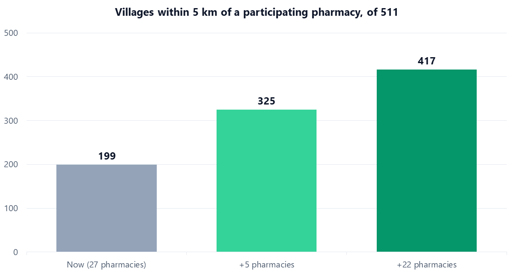

02 / GIS · Published paper
Where should Thailand add pharmacies so everyone is covered?
Thailand lets patients collect medicine at neighbourhood pharmacies to ease hospital crowding — but only if a pharmacy is within reach. This study mapped every drugstore across one densely populated province near Bangkok and used GIS network analysis to find the gaps and the best places to fill them. Co-authored (4th of 8 authors) and presented at the 2023 Asian Conference on Remote Sensing.
- Problem
- Thailand’s medicine-pickup policy only works if a participating pharmacy is within reach. Where are the gaps, and where should new pharmacies go?
- What I did
- Co-author (4th of 8), with the Department of Geography research team at Kasetsart University. Presented at the 2023 Asian Conference on Remote Sensing.
- Tools
- GIS · network analysis · location-allocation · Nearest Neighbour Index · field survey (GPS)
- Result
- 433 drugstores mapped and shown to cluster (Z = −19.71). The current pharmacies reach 199 of 511 villages; 22 well-placed additions would reach 417.
and tested for clustering (nearest-neighbour)
now vs. with 22 added pharmacies (of 511)
co-author (4th of 8), Kasetsart University
What I found
-
01
Pharmacies cluster; they are not evenly spread. A Nearest Neighbor Index over all 433 drugstores returned a clustered pattern (Z-score −19.71, p ≈ 0). Stores line up along main roads and concentrate in the Mueang Nonthaburi and Pak Kret districts, near the two hub hospitals.
-
02
The current network reaches fewer than 4 in 10 villages. With a 5 km service radius, the 27 participating pharmacies cover only 199 of 511 villages. Mueang Nonthaburi is best served (72 villages); Sai Noi worst (8). Whole districts fall outside the network.
-
03
The pharmacies that do serve are overloaded. On average each participating pharmacist serves 13,451 people — well above the NHSO's guideline of no more than 10,000 per pharmacist.
-
04
A few well-placed additions close most of the gap. Location-allocation modelling found that adding 5 pharmacies (in Bang Yai, Bang Bua Thong and Bang Kruai) lifts coverage to 325 villages; adding 22 across all six districts reaches 417 villages — the paper reports these as 82.74% and over 95% coverage. Placement, not just count, is what matters.

The problem
The study province, next to Bangkok, has the second-highest population density in Thailand, and its main hospital sees 2,500–3,000 outside patients a day. The “Medicine Pickup at Neighbourhood Drugstores” policy lets patients collect medication at participating pharmacies instead of queuing at hospitals. It only works if a qualified pharmacy is actually close to where people live.
The study set three objectives:
- Describe how drugstores are distributed across the province — clustered or spread out?
- Measure how many communities the current participating pharmacies can actually serve.
- Find where to add pharmacies to close the coverage gap most efficiently.
How I did it
Distribution first. The Nearest Neighbor Index measured whether stores cluster or spread, giving an objective pattern (clustered) rather than an eyeballed map.
Reach along real roads. Network analysis measured travel distance along the road network — not straight-line circles — from each pharmacy to the 511 villages, within the 5 km radius NHSO sets.
Where to add, not just how many. Location-allocation with a Maximize Coverage model chose sites that add the most newly-covered demand, then scenario analysis tested the 5-store and 22-store expansions.
The data
A cross-section built from field surveys (August–December 2022) and public agencies. GPS coordinates of Type 1 pharmacies came from on-site visits; participating-pharmacy records from the National Health Security Office (NHSO); the road network from GISTDA; village coordinates from the Ministry of Interior; and pharmacy licensing from the FDA.
| Layer | Detail | Source |
|---|---|---|
| Type 1 pharmacies | 433 stores, GPS located | Field survey + FDA |
| Participating pharmacies | 27 (16 from NHSO + 11 field-found) | NHSO + field survey |
| Villages | 511, as demand points | Ministry of Interior |
| Road network | Travel paths for reach | GISTDA |
| Population weight | Ages 41–80, 5 km service radius | NHSO criteria |
Limitations
- A snapshot in time. The network was surveyed in late 2022; coverage shifts as pharmacies join, leave, or change hours.
- Modelling assumptions. The 5 km radius and the ages 41–80 population weight are NHSO criteria, not observed patient behaviour.
- Two ways of counting coverage. Village counts (199 / 325 / 417 of 511) and the paper's percentage figures come from different coverage measures, so they are best read side by side, not swapped.
- Reach is not choice. Distance says a pharmacy is within range; it does not capture traffic, stock, or which pharmacy a patient actually prefers.
Key takeaways
- Count is not coverage. The province had 433 drugstores, yet the participating pharmacies reached only 199 of 511 villages. Where services sit matters more than how many there are.
- Measure distance the way people travel. Network analysis along real roads gives a truer picture of access than drawing straight-line circles on a map.
- Analysis should end in a decision. Location-allocation turned the gap into a plan: 22 well-placed pharmacies would bring 417 of 511 villages within reach.
- Field data and official data work best together. GPS surveys found 11 participating pharmacies the official list missed, so checking records on the ground changed the answer.
- Research is a team effort. As the 4th of eight co-authors, I learned how a GIS study moves from fieldwork to a peer-reviewed conference paper.
References and data sources
- Co-authored paper (4th of 8 authors): Service Area and Spatial Distribution Pattern of Drugstores in Nonthaburi Province. 2023 Asian Conference on Remote Sensing (ACRS 2023), Spatial Information Sciences. Read the paper (PDF)
- Field survey by the research team, August to December 2022: GPS locations of Type 1 pharmacies.
- National Health Security Office (NHSO), Thailand: list of pharmacies participating in the medicine pickup programme.
- Geo-Informatics and Space Technology Development Agency (GISTDA): road network.
- Ministry of Interior, Thailand: village locations.
- Food and Drug Administration (FDA), Thailand: pharmacy licensing records.
Who provided the data: The data came from our own field survey and from Thai government agencies, as listed in the published paper. The study was carried out by the Department of Geography research team at Kasetsart University.